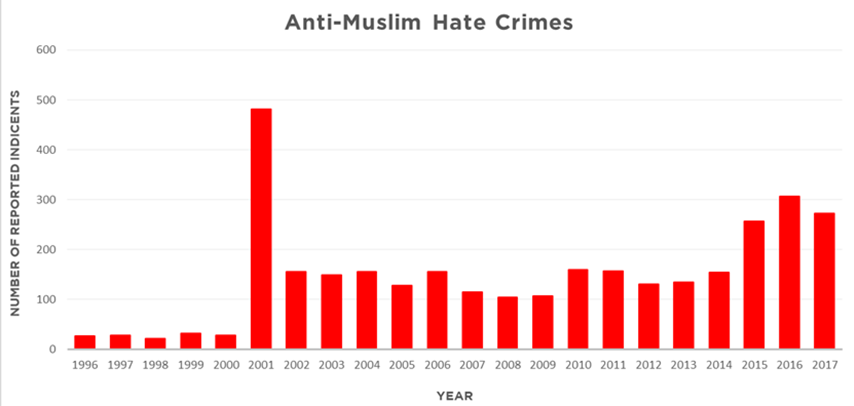

- MMIW
- Women in STEM

Islamophobia
What is Islamophobia?
Islamophobia is the "dislike of or prejudice against Islam or Muslims" Islamophobia increased after the attacks against The Twin Towers. Due to the identity of the terrorists associated with the attacks, Muslims have been discriminated against for decades.
Islamophobia after 9/11
Although the amount of hate crimes against muslims has decreased since 9/11, it has gotten as low as it was before.
Islamophobia in the past presidency.
"Medium" gives a list of 86 times Donald Trump, the POTUS, has displayed or promoted Islamophobia.
Here are a few:
1. 3/30/11 - Trump states there is a "Muslim problem"
2. 11/17/15 - Trump: Syrian refugees are "pouring in" and "could be ISIS"
3. 1/27/17 - First Muslim ban
4. 10/20/17 - Trump claims crime spike in UK is caused by "radical Islamic terror"
5. 4/6/18 - Trump appoints John Bolton and Mike Popeo, who are both tied to Anti-Muslim hate groups
Donald Trump has repeatedly generalized and labeled Muslims as terrorists.
What can we do?
Educate yourself. Call yourself and others out for labeling others based on their religion and how they look, and keep the conversation going.